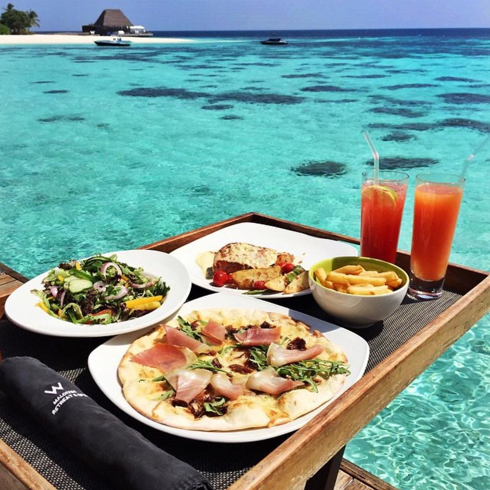
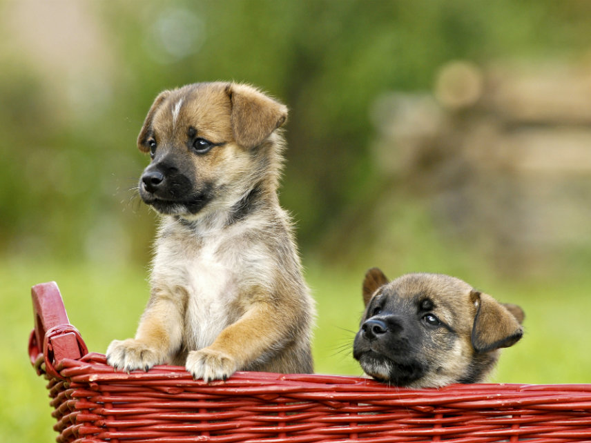
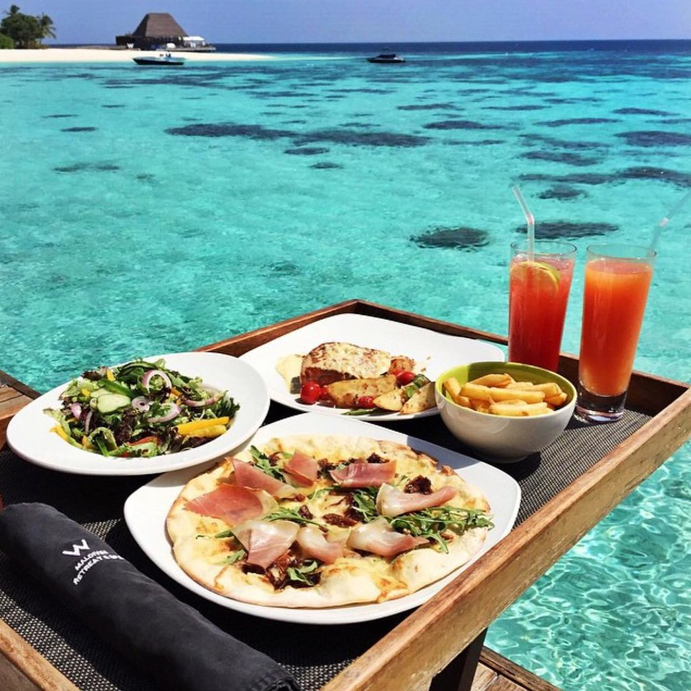
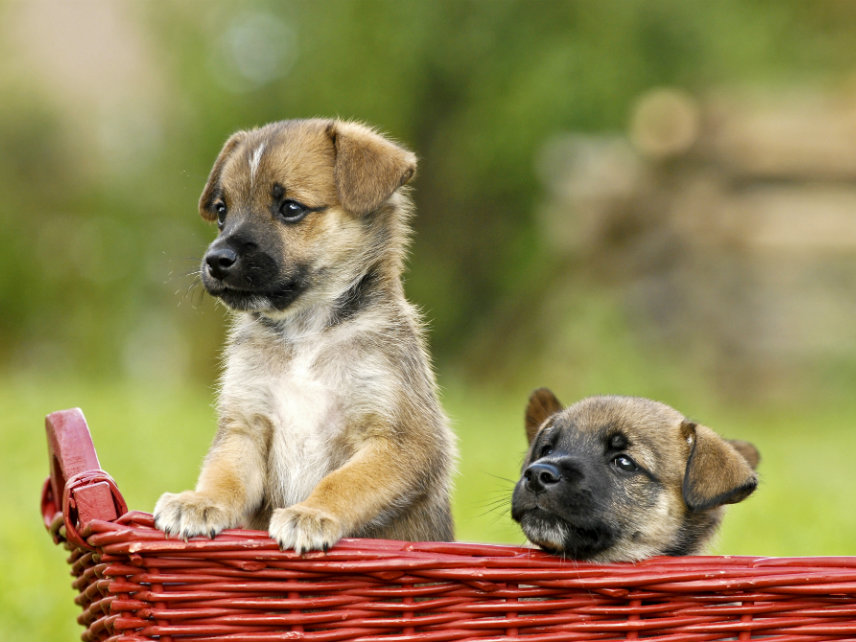
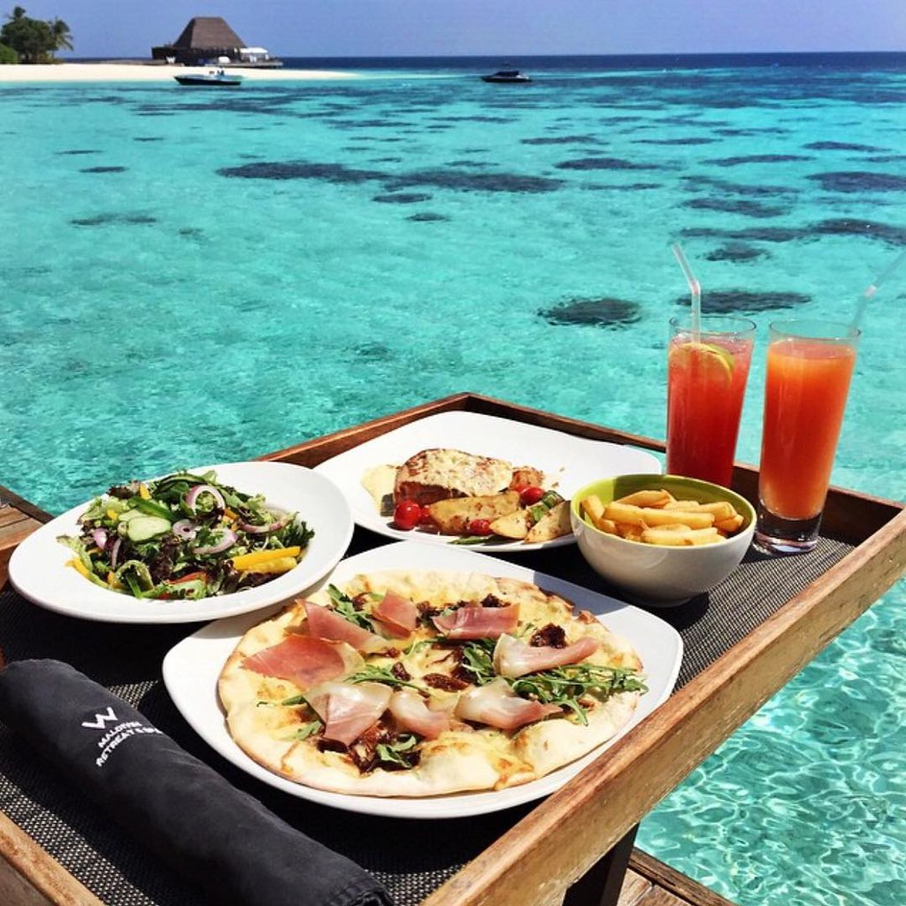
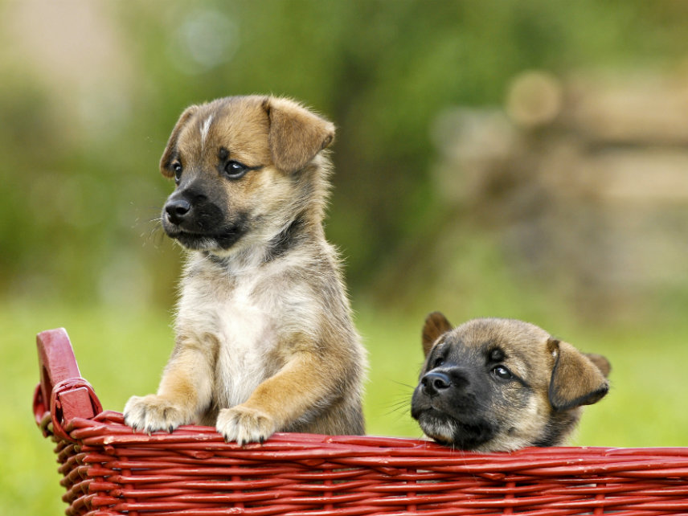

VacayPets is a unique idea started by the minds of Katrina, Alex and Rebecca. We started this idea off of the foundation of loving traveling and pets. Our original thoughts came from many people going to tropical islands and adopting or seeing many stray animals. So we figured, why not help the people with that process! VacayPets is devoted to helping people plan a magical vacation and adding a furry member to their family.


For more information, please contact us below and we thank you for your interest!
Phone: (127)-678-9045
Email: VacayPets@gmail.com
Address: 256 ISTeacup Poodle Lane, Honolulu, Hawaii, 10379l